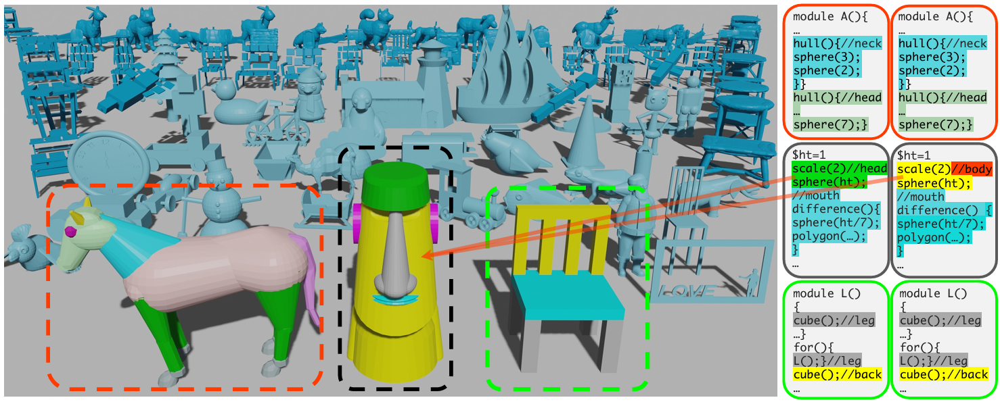

1University of Edinburgh,2Microsoft Research Asia,3Inria, Université Côte d'Azur, 4University College London,5Adobe Research6Delft University of Technology

CADTalk Dataset. Example shapes from CADTalk (left) along with ground-truth (right) and predicted comments (far right). In
these examples, our prediction matches the ground truth, except for the Moai sculpture where CADTalker labeled the “head” code block as
“body”. Machine-made shapes are rendered with dark blue and placed behind the human-made shapes rendered with light blue.
Dataset Statistics and Tracks
Statistics
The number of programs, lines of code, and the number of parts are listed.